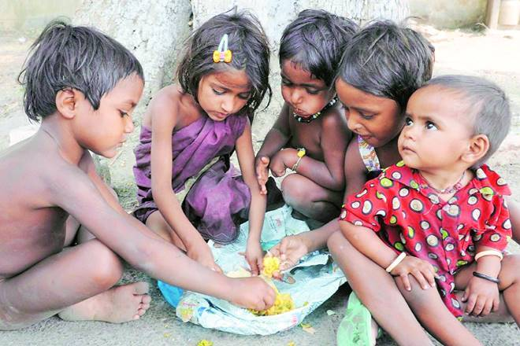
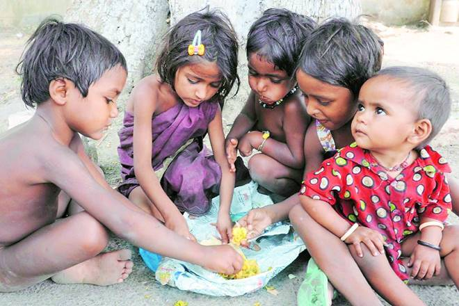

Estimates from 2019 show that nearly 690 million people were hungry in that year, or 8.9 per cent of the world’s population. Children and young people shoulder the greatest burden of all forms of malnutrition from the poorest and most marginalized communities. Worldwide, nearly half of all deaths in children under 5 are attributable to undernutrition. In 2019, 144 million children under 5, or 21.3 per cent were stunted, 47 million or 6.9 per cent, were wasted (of which 14.3 million were severely wasted) and 38 million, or 5.6 per cent, were overweight. Malnutrition during pregnancy can also affect nutrition outcomes in children, notably one third of females aged 15 to 49 years worldwide were affected by anemia in 2016, with no notable change over the last 2 decades
In many countries around the world, there are feeding programs that provide children with nutritious meals during the school day, which can improve their health and academic performance. These sorts of programs help address starvation, and support the production of local food. Aside from that, governments can implement policies and legislation that promotes food security and improve tha access of nutritious food for small farmers, and food-giving programs to populations in a struggle to obtain food.
So with all these amazing explample of how poeople can help to prevent hunger and malnutrition, where do I come in and what can I do? Well as I am currently just a student, and I only have little to no power one of the things that I can think of to even the sltghtest bit help in this advocacy is to volunteer in local food programs because even do it may not look like much it could also inspire the people fed to give back what they were given. Another option that I could do is to donate to well-known organizations like UNESCO so that they can use the total money givent to help the malnutrition poeople.
 



To sign up you can go to the About us page to find the links of more larger organizations to donate to. Or you can sign up in this link to sign up to my organization.